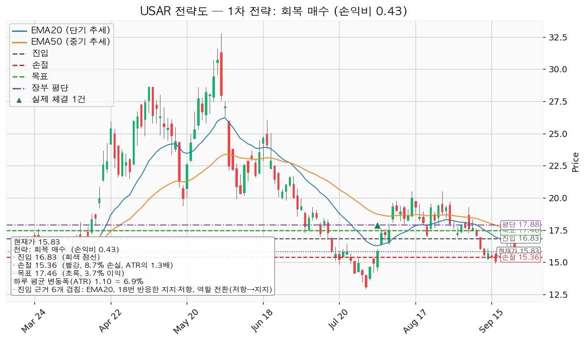
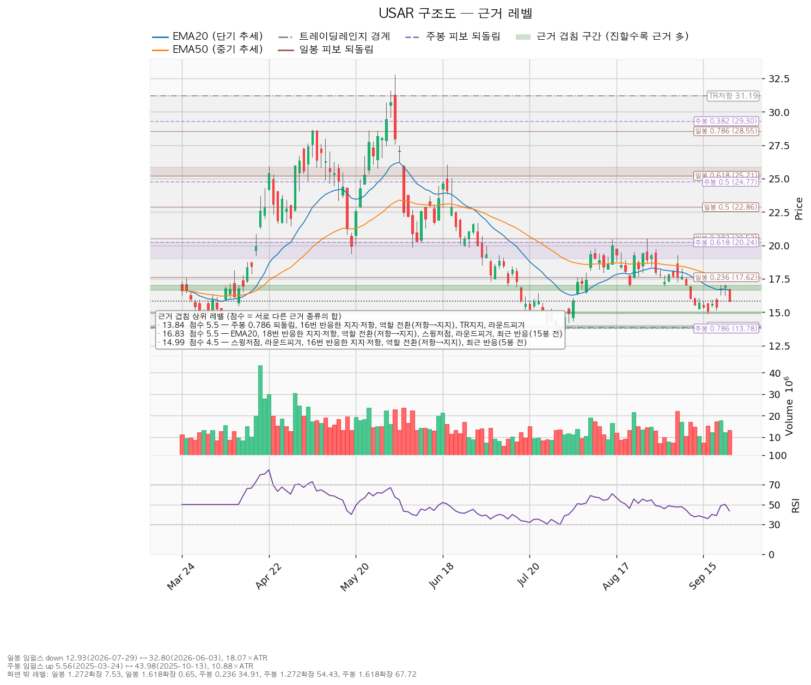
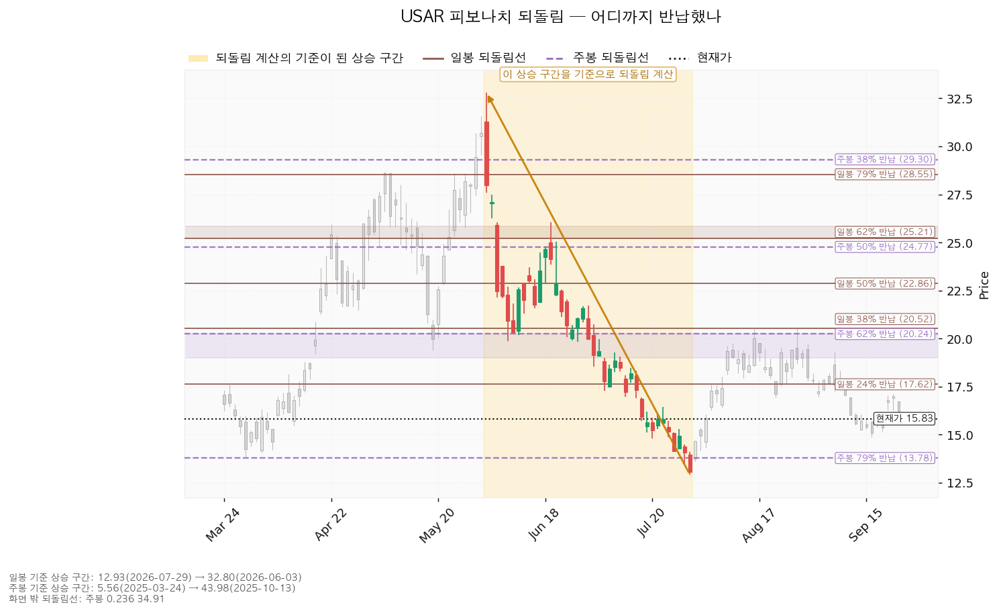
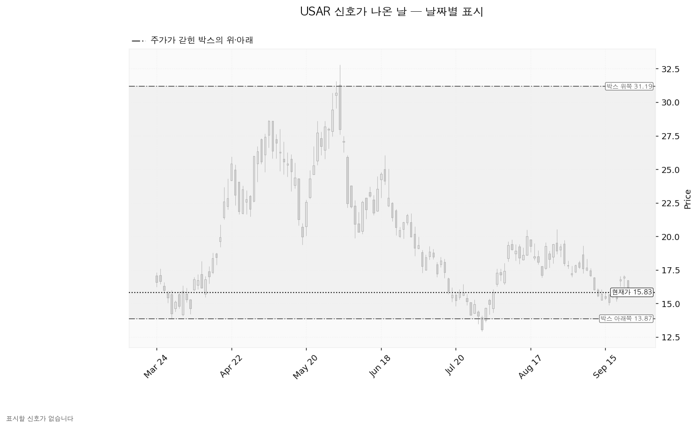

USA Rare Earth(USAR)는 미국 내에서 희토류 자석과 그 원료를 만드는 회사로, 텍사스 라운드톱 광산 개발과 오클라호마 자석 공장을 함께 추진하고 있습니다.
기준 종가는 2026-09-23의 15.83달러이고, 시장 국면은 신규 진입이 가능한 쪽입니다 — S&P 500 7,706이 200일 이동평균 7,192 위입니다(+7.15%, 2026-04-08부터).
| 구분 | 가격 | 판정 방식 | 현재 상태 | 현재가 대비 |
|---|---|---|---|---|
| 회복선 (재분석 조건) | 16.83달러 | 일봉 종가 회복 — 손익비가 1 미만이므로 이 가격은 사는 선이 아니라 다시 계산해 보는 값입니다 | 회복 대기 | +6.32% |
| 집행 손절 | 15.36달러 | 종가·장중 구분 없이 닿으면 청산 — 16.83달러 진입이 성립한 경우에만 유효하며, 이번 리포트는 진입을 내지 않으므로 지금은 의미가 없습니다 | 미진입 | -2.97% |
| 관망 종료 기준 | 14.99달러 또는 2026-11-06 실적 | 일봉 종가가 아래로 마감하면 이 매수 계획이 끝납니다 (새 리포트 대기 / 파는 선 아님) | 유지 중 | -5.33% |
| 확인선 (상승 확정) | 17.46달러 | 일봉 종가 돌파 후 되돌림 지지 | 미돌파 | +10.29% |
| 폐기선 (구조) | 13.87달러 | 이탈 후 3거래일 내 종가 회복 실패(또는 그 전에 12.77 아래 종가 마감) + 반등에서 저항 확인 — 하루 변동폭의 1.78배 거리 | 유지 중 | -12.38% |
확인선 17.46달러는 이 셋업의 목표와 같은 가격입니다. 모순이 아니라 분기이며 아래 「대표 셋업」에서 다룹니다. 박스 상단 31.19달러는 근거가 박스 경계 하나뿐이라 확인선으로 쓰지 않습니다.
직전이 건 조건의 성적표. 회복선 17.76달러는 미충족입니다 — 9월 22일 종가 16.99달러(장중 고가 17.10), 9월 23일 종가 15.83달러로 한 번도 종가로 넘지 못했습니다. 진입이 성립하지 않았으므로 목표 20.04·확인선 20.04에는 닿을 기회 자체가 없었고, 관망 종료 15.02와 폐기선 13.87도 미충족입니다. 등록된 집행 손절 16.43달러는 9월 22일 장중 저가 16.24달러로 닿았고 2단계 경고선 16.65달러는 9월 23일 종가로 이탈했지만, 둘 다 17.76달러 진입이 성립한 경우에만 작동하는 값이라 이번에는 집행 대상이 아닙니다. 직전의 조건 대기 판정은 방향으로 틀렸습니다 — 기준가 16.78달러에서 -5.66%입니다.
좌표의 이동. 가격이 16.78 → 15.83달러로 밀리면서 겹침 구간이 한 칸씩 아래로 내려왔습니다. 회복선·진입은 17.76 → 16.83달러(직전 리포트에서 손절 근거로 쓰던 구간이 이번에는 진입 자리가 됐고, 점수도 4.9 → 5.5점으로 두꺼워졌습니다), 집행 손절은 16.43 → 15.36달러, 목표·확인선은 20.04 → 17.46달러로 내려왔습니다. 목표가 두 칸 내려온 것이 손익비를 무너뜨린 원인입니다 — 이익 폭이 2.28 → 0.63달러로 줄어든 반면 손실 폭은 1.33 → 1.47달러로 늘어 손익비가 1.71 → 0.43이 됐습니다. 관망 종료 기준은 15.02 → 14.99달러로 같은 선반이되 점수가 3.3 → 4.5점으로 두꺼워졌고(5봉 전 반응이 붙었습니다), 폐기선 13.87달러와 하루 평균 변동폭(1.1103 → 1.0993)은 그대로입니다. RSI(14)는 48.87 → 43.50으로 내려왔습니다.
판단. 직전의 조건 대기에서 이번에는 패스로 바뀌었습니다. 가격보다 목표 자리가 크게 움직였습니다 — 9월 21·22일 반등이 17.10달러에서 멈추면서 위쪽 17.46달러 구간이 먼저 걸리게 됐고, 그 위 20.04달러까지 가는 경로가 이번 계산에서는 셋업 범위 밖으로 나갔습니다. 직전 리포트에 오류는 없었습니다.
엔진이 산출한 셋업은 1개입니다. 박스 안쪽이 매집 우위로 판정되지 않아 지지 확인 매수는 나오지 않았고, 하락·중립 국면이라 눌림 매수·돌파 매수도 나오지 않았습니다.
| 항목 | 회복 매수 — 대표 셋업 |
|---|---|
| 엣지의 종류 | 모멘텀 (회복 확인형, 가중치 1.0) — 저항을 종가로 되찾으면 그 방향이 이어진다는 전제 |
| 이 유형의 성격 | 자주 틀리고 소수가 크게 맞는 구조 *(이 유형의 일반적 성격이며 이 엔진에서 측정한 값이 아닙니다 — 백테스트 자료가 없습니다)* |
| 진입 | 16.83달러 (+6.32%, 하루 변동폭의 0.91배 거리) |
| 진입 근거 겹침 | 5.5점 / 6개 — EMA20, 18번 반응한 지지·저항, 역할 전환(저항→지지), 스윙저점 2개, 라운드피겨 17, 최근 반응(15봉 전). 구간 16.65~17.00 |
| 집행 손절 | 15.36달러 — 근거 겹침 구간(15.63, 2.2점) 바로 아래. 손절 폭 -8.73%, 하루 변동폭의 1.34배 |
| 목표 | 17.46달러 (진입 대비 +3.74%) — 겹침 3.7점 / 4개(15번 반응한 지지·저항, EMA50, 일봉 24% 되돌림, 최근 반응 15봉 전). 구간 17.20~17.62 |
| 손익비 | 1 : 0.43 (손절 폭 1.34 ATR 기준) — 손실 폭 1.47달러, 이익 폭 0.63달러 |
| 비중 | 1% ÷ 8.73% = 계좌의 11.5% (13% 상한 안쪽) = 16,042,316원 — 집행하지 않습니다 |
| 판정 | 패스 — 손익비 1 미만 |
| 청산 규칙 | 분할 없이 단일 목표. 중간 목표가 없어 본전 스탑도 없습니다 |

손절 근거와 손익비. 손절 15.36달러는 진입 아래 가장 가까운 겹침 자리(15.63, 2.2점) 바로 아래에 놓인 구조 손절입니다. 이 엔진은 구조 손절 기준 손익비를 따로 내지 않는데, 이번에도 집행 손절이 곧 구조 손절이라 두 값이 0.43으로 같습니다. 손절을 조여 손익비를 만든 경우는 아닙니다. 손익비를 1 아래로 끌어내린 것은 진입 위 첫 저항까지의 거리가 0.63달러(하루 변동폭의 0.57배)밖에 안 된다는 점입니다. 분할 청산 — 중간 목표가 없어 분할 없이 단일 목표이고, 전 구간 손익비도 1:0.43이며, 본전 스탑이 없으므로 T1 체결 후 하한값은 산출되지 않습니다. 진입~목표가 하루 변동폭의 2배에 못 미치므로 트레일링·다단 청산은 권하지 않습니다(이 2배는 관행적 기준이지 정설이 아닙니다). 엔진이 붙인 집행 지침도 목표 17.46달러 전량 청산이며, 돌파 이후 구간은 이 포지션의 연장이 아니라 새 셋업으로 다시 잡습니다.
대표로 고른 이유. 손익비 0.43 × 구조 증명도(회복 확인형) × 근거 겹침 5.5점으로 선정됐습니다. 상대강도·거래량이 순위에 0.9배를 곱했지만(지수 대비 20일 초과수익 -14.14%, 상대강도선 20일 기울기 -14.05%, 돌파 구간 거래량 최대 1.35배) 산출된 셋업이 하나뿐이라 순위는 바뀌지 않았습니다. 확인선과 목표 — 17.46달러는 이 셋업의 목표이자 상승 확인선입니다. 막히고 되밀리면 거기가 매도 자리였다는 뜻이고, 일봉 종가로 넘고 되돌림에서 지켜지면 상승 확정이며 그때는 이 계획의 연장이 아니라 새 셋업으로 다시 산출합니다.
장부와의 관계. 전략도의 평단선은 장부의 30주(2026-08-03 매수, 평단 17.8847달러)입니다. 계획 진입가 16.83달러는 그 평단보다 1.05달러 아래라 평단을 낮추는 매수에 해당하지만, 손익비 0.43으로 패스이므로 집행하지 않습니다. 그 30주는 15.83달러 전량 정리입니다.
셋업 무효화의 기준선은 진입선 16.83달러입니다. 가격을 한 번 내준 것은 폐기가 아닙니다.
① 관찰: 일봉 종가가 16.83달러 아래로 마감 → 구조 이탈이 시작된 것이지만 되돌아 올라오면 속임수 하락일 수 있어 아직 무효가 아닙니다. 신규 진입만 중단하고 집행 손절은 그대로 둡니다. ② 경고: 이탈 후 3거래일 안에 16.83달러를 종가로 회복하지 못함, 또는 그 전에 일봉 종가가 15.73달러 아래로 마감(하루 평균 변동폭의 1배만큼 더 밀림) — 둘 중 먼저 오는 쪽. 잔여 비중을 줄이고 반등에서의 반응을 확인합니다. ③ 무효: 반등이 16.83달러에서 막히고 그 아래로 되밀림(지지가 저항으로 전환) → 셋업 폐기.
이 3단계는 진입이 성립한 다음부터 적용됩니다. 이번 리포트는 진입을 내지 않으므로 어느 단계에도 들어가 있지 않습니다. 집행 손절 15.36달러는 판정이 몇 단계에 있든 무관하게 별도로 작동하며, 장중 일시 이탈은 어느 단계에도 해당하지 않습니다. 시나리오 폐기선 13.87달러는 이 셋업 무효화와 다른 가격이며, 박스 해석 자체를 접는 자리입니다.
| 시나리오 | 조건 | 구조 해석 | 행동 |
|---|---|---|---|
| 상승 전환 | 16.83 종가 회복·지지 → 17.46 종가 돌파 | 속임수 하락 확인 → 강세 신호 → 되돌림 지지 → 상승 국면 | 이 계획으로는 사지 않습니다. 16.83 종가 회복이 나오면 목표 자리가 17.46 위로 옮겨졌는지를 다시 계산하며, 손익비가 1을 넘길 때만 새 리포트에서 진입을 냅니다 |
| 횡보 지속 | 13.87을 지키며 17.46 아래 박스 유지 | 구조는 유지되는 국면입니다. 매물 소화에 시간이 필요할 뿐 부정적 신호가 아닙니다 | 신규 진입 보류. 추적 항목 — ① 지지 테스트 매도 거래량 감소(현재: 혼조) ② 저점 절상(현재: 절상) ③ 상승 시 거래량·캔들 폭 확대(현재: 상승봉 대 하락봉 거래량비 0.96) |
| 시나리오 폐기 | 13.87 이탈 후 3거래일 내 종가 회복 실패, 또는 그 전에 12.77 아래 종가 마감 + 반등에서 저항 확인 | 매집이 아니라 재분산 — 추가 저점 갱신 가능성을 엽니다 | 새 매도 절정과 새 박스가 만들어질 때까지 관망 |
세 갈래 중 지금 가장 두꺼운 것은 횡보 지속입니다. 저점은 절상 중이지만 지지 테스트 거래량이 혼조이고 상승봉 거래량 우위도 없어, 위로 풀릴 근거는 9월 21·22일 거래량(20일 평균의 1.35배)뿐입니다.
| 가격 | 구간 | 점수 | 근거 | 현재가 기준 |
|---|---|---|---|---|
| 16.83 | 16.65~17.00 | 5.5 | EMA20, 선반(18회 반응), 역할 전환, 스윙저점 2개, 라운드피겨 17, 최근 반응(15봉 전) | 위 — 회복선·진입 |
| 13.84 | 13.78~14.00 | 5.5 | 주봉 79% 되돌림, 선반(16회 반응), 역할 전환, 박스 지지, 라운드피겨 14 | 아래 — 폐기선 구간 |
| 14.99 | 14.88~15.03 | 4.5 | 스윙저점, 라운드피겨 15, 선반(16회 반응), 역할 전환, 최근 반응(5봉 전) | 아래 — 관망 종료 기준 |
| 17.46 | 17.20~17.62 | 3.7 | 선반(15회 반응), EMA50, 일봉 24% 되돌림, 최근 반응(15봉 전) | 위 — 확인선·목표 |
| 18.12 | 18.00~18.18 | 3.3 | 라운드피겨 18, 선반(13회 반응), 역할 전환, 최근 반응(29봉 전) | 위 |
| 20.06 | 19.89~20.24 | 3.2 | 스윙저점, 주봉 62% 되돌림, 최근 반응(19봉 전) | 위 — 직전 리포트의 목표 자리 |
현재가 15.83달러는 5.5점 구간(16.65~17.00) 아래로 내려온 자리이고, 아래로 다음에 받칠 곳은 14.99달러(4.5점)이며 그 사이 0.84달러에는 겹침 구간이 없습니다. 박스 판정 — 조회된 일봉은 752봉이며 40·90·180봉을 시험했습니다. 가격이 경계 안에 머문 비율은 40봉 0.700, 90봉 0.944, 180봉 0.994이고, 90봉은 유효 박스로 인정되지 않아 180봉(13.87~31.19달러, 폭은 하루 변동폭의 15.75배)이 채택됐습니다.
박스 안쪽 판정은 중립입니다. 지지 테스트는 6회입니다(2026-01-14 저가 15.732, 거래량 평균의 1.24배 → 01-16 16.05, 0.78배 → 03-30 13.865, 0.97배 → 07-29 12.93, 1.29배 → 08-06 16.42, 0.99배 → 09-16 14.88, 1.16배). 테스트마다의 매도 거래량은 혼조이고 상승봉 대 하락봉 거래량비는 0.96으로 매수 우위가 없습니다. 중립 판정의 근거는 박스 안 저점 절상 하나이며, 매집 우위로 서지 않았으므로 지지 확인 매수 셋업은 이번에도 산출되지 않았습니다. 직전 구간과의 관계를 보면, 이 박스 직전 180봉의 구간은 8.42~27.58달러로 가격대가 겹칩니다 — 위로 뚫고 올라온 것도 아래로 이탈한 것도 아닌 같은 횡보의 연장입니다.

되돌림. 일봉은 32.80달러(2026-06-03) → 12.93달러(2026-07-29) 하락분 기준으로 24% 17.62 / 38% 20.52 / 50% 22.87 / 62% 25.21 / 79% 28.55이고, 주봉은 5.56달러(2025-03-24) → 43.98달러(2025-10-13) 상승분 기준으로 62% 20.24 / 79% 13.78입니다. 현재가 15.83달러는 6~7월 하락분의 24%(17.62달러) 아래, 주봉 상승분을 79% 반납한 13.78달러 위에 있습니다. 목표 17.46달러는 일봉 24% 되돌림선이 다른 근거와 겹친 자리이고, 폐기선 13.87달러는 주봉 79% 되돌림선이 겹친 자리입니다.

날짜별 신호. 이번 조회 구간에서 Wyckoff 이벤트(속임수 하락·속임수 상승·강세 신호·약세 신호)는 하나도 잡히지 않았습니다. 박스는 유효하게 판정됐고 계산도 정상적으로 끝났으므로 판정 보류가 아니라 표시할 신호일이 실제로 없다는 뜻이며, 아래 차트가 회색 일색인 것은 그 때문입니다. 국면 후보는 하락 진행이며 근거는 하락 추세·EMA 역배열·기울기 음입니다.

(a) 배수. 후행 주당순이익 -2.69달러로 적자라 후행 PER은 산출되지 않습니다. 당해 예상 -0.57달러(적자 폭 전년 대비 30.5% 축소), 다음 해 예상 +0.03달러(흑자 전환, 증가율 105.3%)이고 선행 PER 527.7배는 분모가 0.03달러라서 나온 값입니다. 다음 해 추정의 범위가 최저 -1.32 ~ 최고 +1.07달러로 벌어져 흑자 전환 자체가 아직 합의되지 않았습니다 — 배수로 비싸다·싸다를 판정할 단계가 아닙니다.
(b) 목표주가 분포. 애널리스트 9명, 투자의견 strong_buy. 최저 21.00달러(+32.66%) / 평균 35.56달러(+124.61%) / 최고 45.00달러(+184.27%). 현재가 15.83달러는 9명 전원의 목표 가운데 가장 낮은 21.00달러보다도 아래입니다. 그 최저 목표는 이 셋업의 목표 17.46달러보다 3.54달러 위에 있습니다. 컨센서스는 12개월, 이 셋업은 수 주입니다.
(c) 추정치 방향. 당해 연도는 90일 전 -0.553 → 현재 -0.570달러로 적자가 깊어졌고(90일 3.0%, 30일 3.0%), 다음 해는 90일 전 +0.0333 → 현재 +0.030달러입니다(90일 -10.0%, 최근 30일 0.0%). 추정치가 가격과 같은 방향으로 내려온 구간이므로 추정치가 오르는데 가격만 빠지는 배수 수축에는 해당하지 않습니다. 하향은 90일 전~30일 전 사이에 일어났고 최근 30일은 멈춰 있습니다. 하향 폭은 한 자릿수인데 가격은 6월 3일 고점 32.80달러 대비 -51.7%입니다 — 추정치가 방향은 설명하지만 크기는 설명하지 못하고, 나머지는 흑자 전환 시점에 대한 기대가 바뀐 부분입니다.
(d) 현금흐름. 결산 기준일 2025-12-31 기준으로 영업활동 현금흐름 -4,899만 달러(음수), 잉여현금흐름 -8,634만 달러, 설비투자 3,736만 달러(직전 311만 달러, +1,102.4%)입니다. 영업 단계에서 이미 현금이 나가고 거기에 설비투자가 더해진 구조로, 영업은 흑자인데 설비투자가 앞선 경우와 다릅니다. 자기 이익으로 감당할 수 없으므로 추가 자금 조달이 필요하고 그 형태에 따라 기존 주주 지분이 희석될 수 있습니다. 세 수치는 서로 맞아떨어집니다.
(e) 상승 여력의 분해. 다음 해 예상 주당순이익 0.03달러 기준 내재 배수는 현재가 527.7배, 최저 목표 700.0배, 평균 목표 1,185.2배입니다. 평균 목표까지의 +124.61% 가운데 이익 증가로 설명되는 부분은 없고, 광산·자석 공장 자산과 프로젝트 진행 속도에 매긴 값입니다. 주도주 여부는 아님이며 직전과 같습니다. 실적 기준으로는 당해 적자에 영업현금흐름 음수, 가격 기준으로는 52주 고점 대비 -64.01%에 200일선(19.39달러) 아래이고 지수 대비 20일 초과수익 -14.14%입니다(가중 초과수익 -17.96%, 가중치 20일 0.45 · 60일 0.30 · 120일 0.25).
날짜가 있는 확인 이벤트는 2026-11-06 분기 실적 하나입니다. 그때 볼 수치는 당해 주당순이익(컨센서스 -0.57, 최저 -0.78), 영업활동 현금흐름(직전 -4,899만 달러), 설비투자 집행 속도, 자금 조달 계획입니다. 그 이후 2~3개 분기의 역풍(예정된 비용 반영, 종료가 예고된 일회성 이익, 기저가 높은 비교 분기)은 확인할 자료가 없어 적지 않습니다.
1회 매매 손실 한도는 계좌의 1%이고(계좌 평가액 139,498,400원), 손절 폭 -8.73%로 역산하면 계좌의 11.5% = 16,042,316원입니다. 한 종목 상한 13% 안쪽이라 제한은 걸리지 않지만, 손익비가 1 미만이므로 집행하지 않습니다.
도구 적합성. 하루 평균 변동폭이 주가의 6.94%인 종목이고 이 셋업의 손절 폭은 8.73%(1.34배)로 하루 변동폭보다 넓습니다. 손절 자체는 하루짜리 등락에 체결되는 구조가 아니지만, 목표까지가 0.63달러(하루 변동폭의 0.57배)라 이익 쪽이 하루 등락 안에 들어와 있습니다.
판정: 패스. 손익비 1:0.43(손절 폭 1.34 ATR)으로 1 미만입니다. 조건 점검은 2/9이며 미달은 20일선 위·이동평균 정배열·200일선 위·52주 고점 대비·지수 대비 20일 초과수익·상대강도선 신고가·손익비입니다 — 단기 수요까지 무너져 직전 리포트에서 통과했던 20일선 위 항목이 이번에는 미달로 바뀌었습니다. 기본 시계는 수 주이고 위 컨센서스는 12개월이라 층위가 다릅니다. 16.83달러 일봉 종가 회복이 나오면 매수가 아니라 재분석을 합니다. 보유 30주는 15.83달러 전량 정리입니다(-61.64달러, -11.49%).
ATR = 하루 평균 변동폭. EMA20·EMA50 = 최근 20일·50일 흐름을 나타내는 평균선. RSI(14) = 과열·침체 정도를 재는 지표로 50이 중립. 되돌림(피보나치) = 직전 상승·하락분의 몇 %를 반납했는지로 보는 가격대. 선반 = 가격이 여러 번 반응한 수평 가격대. 손익비 = 손실 폭 대비 이익 폭. 속임수 하락(spring) = 지지선을 잠깐 뚫고 곧바로 되돌아오는 움직임.
본 자료는 정보 제공 목적이며 투자 권유가 아닙니다. 투자 판단과 그 결과에 대한 책임은 투자자 본인에게 있습니다.